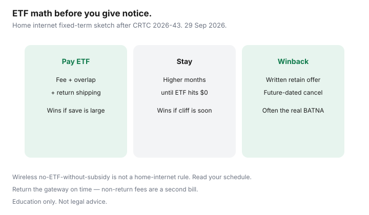

Internet · Canada
Cancelling a Canadian Internet Contract Early: ETF Math, Moves, and Code Protections
Households either overpay early cancellation fees or stay stuck in bad home-internet contracts because “the CRTC banned ETFs.” For wireless without a phone subsidy, that slogan is closer to true after CRTC 2026-43. For fixed-term home internet, a disclosed ETF can still apply, declining to $0 by the lesser of 24 months or the term. This guide is ETF math, move leverage, Code protections, and an equipment return checklist — not legal advice. Stamped ~22 Sep 2026.
Disclosure: Education only — not legal advice. ISP offer types (month-to-month plans, independents, flankers) may appear as comparisons. No partnership claimed. Confirm your contract schedule before you give notice.
Key takeaways
- Read the ETF total, monthly decline, and zero date before you call cancel.
- Month-to-month internet should not carry an ETF; fixed-term can.
- Moves, chronic service failure, and contract mismatches are leverage — document them.
- Compare ETF + staying through promo-end against a written competitor quote.
- Return gateways on time; non-return fees are separate from ETFs and still allowed when contracted.
Read the ETF and remaining term before you call
Ask for three numbers in one email: remaining ETF dollars, how much it drops each completed month, and the date it hits $0. Illustrative shape used across our 2026 explainers: $360 schedule, $15 per completed month, $0 at month 24. Cancel early in month 10 and roughly 14 × $15 may still be owing — before tax and before equipment.
Internet Code rules that affect cancellation (verify at draft)
- Fixed-term ETF must be disclosed and reduced to $0 by ≤24 months (Internet Code G.3 framing in the simplified Code).
- Trial period when an ETF applies to a new customer: at least 15 days (30 with disability self-ID), with usage caps — cancel inside the window and return gear in near-new condition.
- 45-day mismatch path if the permanent contract is late or conflicts with what you agreed (for applicable providers).
- CRTC 2026-43 (12 Jun 2026): most activation / no-visit change fees banned; internet fixed-term ETFs not erased.
Smaller retailers may sit in CCTS without every Code clause applying the same way — read your contract and membership.

Moves, service failures, and other leverage points
- Move outside footprint: ask about transfer, pause, or waiver policies in writing; a change of address is a new quote, not an automatic free exit.
- Chronic outages / failed repair: tickets and dates before you threaten cancel — then CCTS if needed.
- Winback alternative: future-dated cancel plus a written retain offer can beat paying the ETF to leave.
- Trial window: still open? Use it instead of a month-12 tantrum.
ETF vs staying through promo-end math
| Path | What you pay | When it wins |
|---|---|---|
| Pay ETF, switch now | ETF + new install overlap + return shipping | Competitor 24-month save exceeds ETF quickly |
| Stay to promo-end / ETF-zero | Higher monthly for N months | Cliff is soon; ETF still large |
| Winback in writing | Possibly $0 ETF if you stay | Retention beats both alternatives |
Return equipment to avoid extra fees
Photograph serials, use the official kit or drop-off, keep tracking and receipts until the next bill shows rental at zero and no non-return line. See the companion modem return guide.
A cancellation checklist with dates
- Day 0 — Screenshot contract ETF schedule and last invoice.
- Day 0 — Collect two competing address quotes (24-month CAD).
- Day 1 — Email ISP: remaining ETF, zero date, return instructions.
- Day 2 — Run stay vs leave math; attempt winback if numbers favour it.
- Day 3 — If leaving: future-dated cancel, book return, set overlap.
- Cancel week — Ship/drop gear; save proof.
- Next invoice — Dispute wrongful activation-style fees; escalate to CCTS if needed.
Sources & date stamps
- CRTC Internet Code (simplified) — ETF, trial, mismatch paths (re-read ~22 Sep 2026).
- CRTC 2026-43 and CCTS fee explainers (2 Sep 2026 page references; re-read ~22 Sep 2026).
- Saving Optimizer: Internet ETFs after 2026-43; move without paying twice; CCTS filing guide.
Frequently asked questions
Did the CRTC ban all internet cancellation fees in June 2026?
No. CRTC 2026-43 generally bans many activation and no-visit modification fees and changed wireless ETF rules without a device subsidy. Fixed-term home internet ETFs can still exist if disclosed and declined to $0 on the Code schedule.
Is there an ETF on month-to-month internet?
Indeterminate or month-to-month home internet should not carry an early cancellation fee under the Internet Code framing used in our 2026 explainers. Read your critical information summary anyway.
Can I cancel free if I move apartments?
Not automatically. Ask about transfer to the new address, pause options, or written waivers. Document the footprint gap if service cannot be provided.
Should I cancel before I have a competitor install date?
Usually no. Book the new install, set a short overlap, then future-date the cancel so you are not offline between modems.
What if the agent will not email the ETF schedule?
Keep trying chat/email so the refusal is written. The Code expects the fee information in the contract materials — use that PDF if the phone channel stalls.